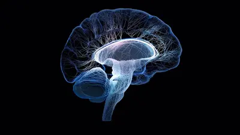

Competencia
Comprender el funcionamiento de los procesos cerebrales de adquisición del aprendizaje en las Personas con Discapacidad (PcD), para aplicar métodos de intervención neurodidáctica adecuados a las necesidades individuales.
Descripción
La Experiencia Educativa Neurociencia Aplicada a la Educación de las Personas con Discapacidad, pertenece al área de formación optativa del Modelo Educativo Integral (MEI) de la Universidad Veracruzana. Esta EE se compone de tres módulos que te permitirán conocer y aplicar conocimientos sobre los temas de: neurociencia, desarrollo cerebral, procesos psicológicos, neuroeducación y estrategias pedagógicas para intervenir en los trastornos del aprendizaje de las PcD, teniendo las siguientes bases temáticas transversales: internacionalización, interculturalidad, arte- creatividad e inclusión en un marco de responsabilidad social.
Contenido
- Información general
- Módulo 1. Base de las neurociencias
- Módulo 2. Neurociencia de las funciones mentales superiores
- Módulo 3. Aportes de la neurociencia a la educación de las Personas con Discapacidad
Experto en contenido
María Méndez García
Universidad Veracruzana
Licenciada en Psicología de la Universidad Veracruzana.
Especialista en Neuropsicología Clínica Pediátrica por el Centro Neuropsicológico para Niños
y Adolescentes (CENNA) de Monterrey, Nuevo León.
Diplomado en Neurodesarrollo y Neuroeducación por parte del Centro de Estudios Psicológicos
para la Educación (CEPE).
En la actualidad es Neuropsicóloga responsable de tratamiento Neuropsicológico en
niños/niñas y adolescentes, en el Centro Neuropsicológico Integral CENPI Special Therapy.
María Méndez García
Universidad Veracruzana
Fuentes de información
Instrucción: Presiona el botón para descargar el archivo.
Módulo 1. El cerebro, base de las neurociencias
Propósito
Identificar la importancia del cerebro en el proceso de la manifestación conductual y el aprendizaje del ser humano.
Introducción
En este módulo encontrarás una descripción detallada de la evolución de la neurociencia, haciendo énfasis en la neurociencia cognitiva y la neuroeducación, esto te permitirá vincular los conocimientos científicos relacionados con el cerebro a los procesos de aprendizaje para conocer y generar herramientas que optimicen los procesos de los educandos en los módulos posteriores. Haremos un recorrido por el desarrollo cerebral, recordando cómo se forma tan maravilloso órgano, las partes que lo integran y las funciones relacionadas con ellas; cómo es que el cerebro cambia y se adapta según su exposición a diversos aprendizajes.
Tema 1
Definición de neurociencia
La neurociencia proporciona la base científica para comprender la relación entre el cerebro, la conducta y el aprendizaje. Este conocimiento es fundamental para analizar tanto el funcionamiento típico del sistema nervioso como sus particularidades, lo que la convierte en una piedra angular para la intervención educativa en contextos de discapacidad.
Instrucción: Presiona la tecla de video para iniciar la reproducción.
La neurociencia
La neurociencia es una disciplina de las ciencias naturales dedicada al estudio del
sistema nervioso, que comprende el cerebro, la médula espinal y las redes de
neuronas distribuidas por todo el cuerpo. Su campo de acción abarca la estructura,
la función y los procesos químicos que rigen el funcionamiento cerebral.
Su objetivo central es comprender los mecanismos mediante los cuales el sistema
nervioso regula tanto las funciones corporales básicas, como la respiración y el
ritmo cardíaco, como procesos complejos, que incluyen las emociones, los
pensamientos y la conducta.
Los neurocientíficos realizan investigaciones en múltiples niveles de análisis:
- Examinan componentes que van desde moléculas, células nerviosas y redes neuronales, hasta la estructura cerebral en su conjunto.
- Analizan la interacción de estos elementos en el desarrollo y funcionamiento típico del sistema nervioso, así como en los trastornos y enfermedades que afectan su crecimiento y actividad.
Instrucción: Presiona el botón para descargar el archivo.
Antecedentes
Los fundamentos de la neurociencia moderna se sustentan en contribuciones históricas clave.
Instrucción: Presiona cada botón para conocer la información
La evolución de la neurociencia se remonta a los antiguos griegos que
estaban fascinados por el cerebro. En el siglo cinco a. C., Alcmeón de
Crotona, pionero de la disección, propuso que el cerebro era el asiento
del pensamiento y las sensaciones. Por otro lado, Aristóteles creía que
el centro del intelecto era el corazón. Más adelante, Galeno propuso que
el cerebelo actuaba sobre los músculos, el receptor de las sensaciones y
conservaba la memoria. También, relacionó los ventrículos cerebrales con
las cavidades del corazón estableciendo que las sensaciones y
movimientos dependían del flujo de los humores, hacia o desde los
ventrículos cerebrales, a través de los nervios.
Durante el siglo dieciocho se planteó que el tejido nervioso desempeñaba una
función glandular. Con base en la teoría de Galeno se estableció que los nervios
eran el conducto que transportaba los fluidos secretados por el cerebro y la
médula espinal hacia la periferia del organismo humano. El surgimiento de las
máquinas hidráulicas contribuyó para reforzar la teoría ventricular cerebral.
Esta teoría expone que: “los líquidos expulsados desde los ventrículos bombean
al organismo, por eso los músculos aumentan de tamaño durante el movimiento”.
René Descartes (1596-1650) defendió la teoría mecanicista de la función cerebral
para explicar la conducta de los animales. Pero para él esta teoría no
explicaría la complejidad de la conducta humana, pues el hombre, al contrario
que los animales, posee un intelecto y un alma dada por Dios. Por eso, Descartes
creía que el cerebro controlaba la conducta humana en lo que esta tiene de
animal y que las capacidades especiales del hombre residen fuera, en la mente
(“l’esprit”).
Fuente: Castro, A. (2022).
Teoría neuronal
La teoría neuronal fue confirmada a través de diversos estudios, entre ellos el realizado por Ross Harrison. Un embriólogo que, por medio de cultivos tisulares, corroboró la teoría y demostró que las prolongaciones de las neuronas, las dendritas y axones son estructuras continuas del cuerpo neuronal, y se desarrollan a partir de esta.
Instrucción: Presiona cada botón para conocer la información.
Siglo diecinueve
Siglo veinte
Siglo diecinueve
Durante el siglo diecinueve, los científicos Emil du Bois-Reymond, Johannes Müller y
Herrmann
von Helmholtz desarrollaron los fundamentos de la electrofisiología. Además, Helmholtz
descubrió
la actividad eléctrica de las neuronas durante la transmisión de información entre células.
En
la misma línea de investigación, el médico Charles Bell y el fisiólogo François Magendie
aclararon la ruta de transmisión de las señales entre el sistema nervioso y la periferia del
organismo. Por otra parte, el neurofisiólogo Charles Scott confirmó tajantemente la teoría
de
Ramón y Cajal acerca del contacto interneuronal, al que denominó sinapsis.
Siglo veinte
El descubrimiento de Paul Ehrlich y John Langley constituye la base para los estudios
actuales acerca de la transmisión química sináptica. Posteriormente, alrededor de 1960 el
bioquímico Hornykiewicz observó que el cerebro de personas enfermas de Parkinson mostraba
una baja concentración de dopamina. De esta forma, se establece una correlación
fisiopatológica entre el déficit de un neurotransmisor y la presencia de un trastorno
neurológico.
En años recientes, el desarrollo de las neurociencias se ha vinculado con la psicología. Disciplina que está presente en la sociedad desde la época griega con los mismos cuestionamientos acerca de la naturaleza de la mente y el comportamiento humano.
Fuente: Castro, A. (2022).
Neurociencia y educación
La neurociencia está acercando al profesorado a conocer el cerebro y su funcionamiento, ya que se ha demostrado su gran aportación al campo pedagógico respecto al funcionamiento del aprendizaje, la memoria, las emociones y muchas otras funciones cerebrales, que cada día son estimuladas en los centros educativos.
Instrucción: Presiona cada botón para conocer la información
Relación interdisciplinaria
De acuerdo con Varela (1996, citado por Ferreira, 2019) la relación entre neurociencia y
educación debe necesariamente entenderse desde una perspectiva amplia, pues ambas
disciplinas están estrechamente relacionadas con una serie de otras áreas de estudio. Es así
como la neurociencia forma parte de un espectro mayor, que reúne a la psicología, la
lingüística, la inteligencia artificial e incluso la antropología y la filosofía.
Por su parte, la educación también tiene una relación estrecha con todas las posibles
asignaturas que se enseñan en un establecimiento escolar (lenguaje, matemáticas, historia,
etc.), las que en conjunto permiten preparar a un individuo para formar parte de la
sociedad.
Neurociencia cognitiva
Al hablar de neurociencia nos referimos principalmente a la neurociencia cognitiva, pues esta área se preocupa de estudiar la relación entre la mente y el cerebro, y representa la integración de la psicología cognitiva y la neurociencia. Entre tanto, al referirnos a la mente, aludimos a los procesos cognitivos como la percepción, el pensamiento, la conciencia y la memoria, entre otros. Por su parte, el cerebro, además de realizar las funciones que mantienen el funcionamiento del cuerpo, es el órgano donde reside la mente, es decir, donde tienen lugar todos los procesos cognitivos.
Concepto de Neuroeducación
La neuroeducación es una disciplina que busca integrar contribuciones de la neurociencia, la psicología, la ciencia cognitiva y la educación. Se centra en comprender los mecanismos cerebrales del aprendizaje para desarrollar métodos más eficaces y eficientes que orienten el diseño de currículos y políticas educativas (Caicedo López, 2016, citado en Ensuncho Hoyos, 2024). Este concepto también se denomina neuroaprendizaje, aprendizaje basado en el cerebro, neurociencia educacional o educación compatible con el funcionamiento cerebral
Beneficios
Uno de sus mayores beneficios de la neuroeducación es gestionar las emociones, enseñar a las
personas a identificar qué tipo de emoción están sintiendo para no reaccionar impulsivamente
a ellas y así, poder dar una respuesta más acertada. La gestión de las emociones tiene que
ser utilizada para potenciar el aprendizaje.
Saber qué es la neuroeducación nos enfoca a mejorar las estrategias del desarrollo educativo
y los procesos de enseñanza estableciendo un puente entre la neurología y las disciplinas
que engloban a la educación.
La neurociencia proporciona las bases científicas para comprender los procesos cerebrales vinculados al aprendizaje. Su aplicación en el ámbito educativo, a través de la neuroeducación, permite desarrollar estrategias pedagógicas fundamentadas que optimizan la gestión emocional y los procesos de enseñanza. Este enfoque representa un avance significativo para la creación de entornos educativos más eficaces e inclusivos.
Neurociencia cognitiva y neuroeducación
La neurociencia cognitiva se configura como una disciplina fundamental que estudia las complejas relaciones entre el sistema nervioso y los procesos cognitivos humanos, integrando los aportes de la psicología cognitiva y las neurociencias. Desde esta perspectiva, surge la neuroeducación como campo de convergencia que combina los hallazgos neurocientíficos con los principios pedagógicos, estableciendo un puente esencial entre la investigación cerebral y la práctica educativa.
Para profundizar en el tema, consulta los siguientes materiales:
- Aportes desde las neurociencias para la comprensión de los procesos de aprendizaje en los contextos educativos. Enlace [Aportes desde las neurociencias para la comprensión de los procesos de aprendizaje en los contextos educativos] se abre en nueva pestaña.
- ¿Por qué la neurociencia debería ser parte de la formación inicial docente? Enlace [¿Por qué la neurociencia debería ser parte de la formación inicial docente?] se abre en nueva pestaña.
Plasticidad cerebral y aprendizaje
La capacidad del cerebro para adaptarse y cambiar ante cualquier circunstancia, se conoce como neuroplasticidad y gracias a las neurociencias, podemos saber que el cerebro sigue creando y modificando conexiones neuronales como resultado de un proceso adaptativo.
Instrucción: Presiona cada botón para conocer la información
-
Plasticidad cerebral: Capacidad del cerebro para adaptarse y cambiar ante cualquier circunstancia, creando y modificando conexiones neuronales como resultado de un proceso adaptativo.
-
Plasticidad estructural: Cambios físicos en la estructura del cerebro, como el crecimiento de nuevas neuronas o la formación de nuevas conexiones sinápticas.
-
Plasticidad funcional: Capacidad del cerebro para reorganizarse y reasignar funciones a diferentes áreas cerebrales en respuesta a lesiones o cambios en el entorno.
-
Plasticidad molecular: Cambios a nivel molecular, como la modificación de receptores y neurotransmisores, que afectan la comunicación entre las neuronas.
Aunque la plasticidad cerebral es una capacidad que perdura toda la vida y se estimula mediante diversas actividades (Doddoli, 2022), el aprendizaje escolar no puede reducirse a simples procesos cerebrales. Como señala Terigi (2016), comprender lo que sucede en la escuela requiere mirar más allá del cerebro: la calidad de la enseñanza, las interacciones en el aula y el contexto educativo son fundamentales para entender cómo se produce el conocimiento.
Autoevaluación
Realiza la autoevaluación y guarda tu archivo en PDF
Lineamientos de entrega
- Nombra el archivo de la siguiente manera Autoevaluacion1_PrimerNombreyPrimerApellido.pdf, por ejemplo: Autoevaluacion1_ElenaTorres.pdf
- Envía tu archivo a tu facilitador a través del apartado Evaluaciones de la plataforma Eminus.
- Entrégalo en los tiempos establecidos en el Calendario.